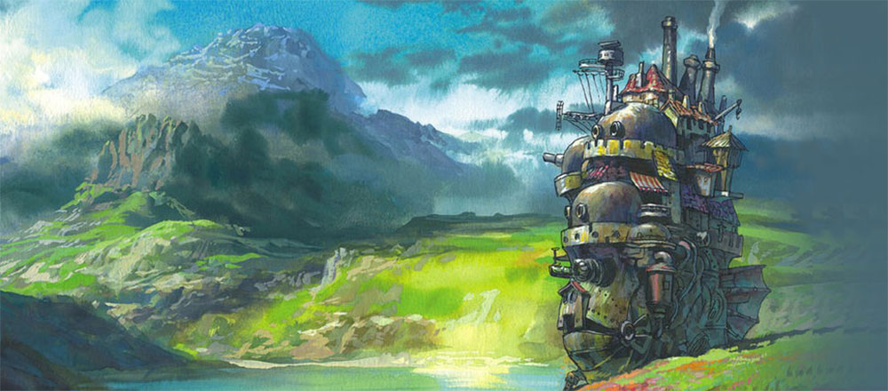
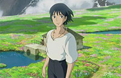

影片评价
追求真善美
宫崎骏在作品中会弘扬“真善美”。在他的动画里，世界很单纯。对于动画中角色来说，“最重要的”绝非金钱与声誉，往往是某个挚爱的人。在《哈尔的移动城堡》里，苏菲爱上了哈尔，被魔法变成90多岁的老太太，她也借此机会进入哈尔的内心，发现他是个孤独的孩子。在影片的后半段，苏菲来到哈尔记忆中的星空下，地上开满白色的小野花儿，流星划过，儿时的哈尔从水边的小房子里奔跑而出——这就是哈尔打开心门，将爱情交付苏菲的一瞬。透过这唯美的画面，观众读到的不是孤独的等待，而是执着、感动人心的爱情。
宫崎骏作品的审美追求“唯美”，在他的动画片中，从背景环境到风俗民情，展现着美的画面。但他追求的更多的是内心的“真”和“善”，在他的作品中，相貌丑陋的老奶奶、女巫因善良而美丽，穿男装的村妇则具有一种朴实的美。
爱与反战
《哈尔的移动城堡》延续了宫崎骏以往的风格，将动画上升到人文高度。影片以童趣的形式，寄托着人类的梦想和怀旧的情怀。在宫崎骏的电影世界中，尽管时空背景不同，但不变的是勇敢的女孩、广阔的天空、以及画龙点睛的配角，来诠释“人该活在和平与爱之中”及“反战”的故事主题，藉影片来传达这个世界是非常的美好，值得生存并探索下去的。
看到影片，大多数女孩子都会被哈尔的帅气迷人所吸引，其实，影片想要着重表现的是苏菲的勇敢与善良。她即使变成了老人的丑陋外形，却因为善良勇敢的心而散发出美丽的光芒。影片最美在苏菲，是苏菲的爱和美丽的心挽救了哈尔，带来了和平。
精彩图集
- 

哈尔的移动城堡